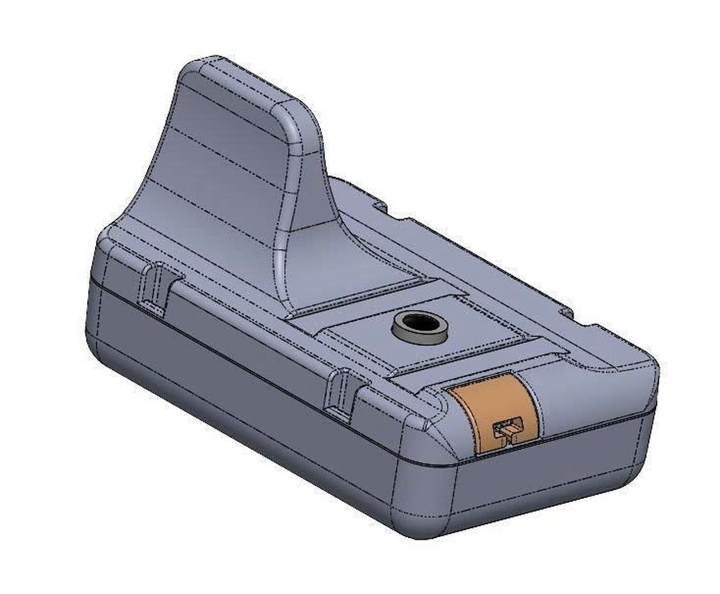
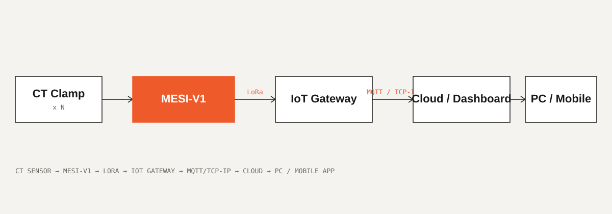
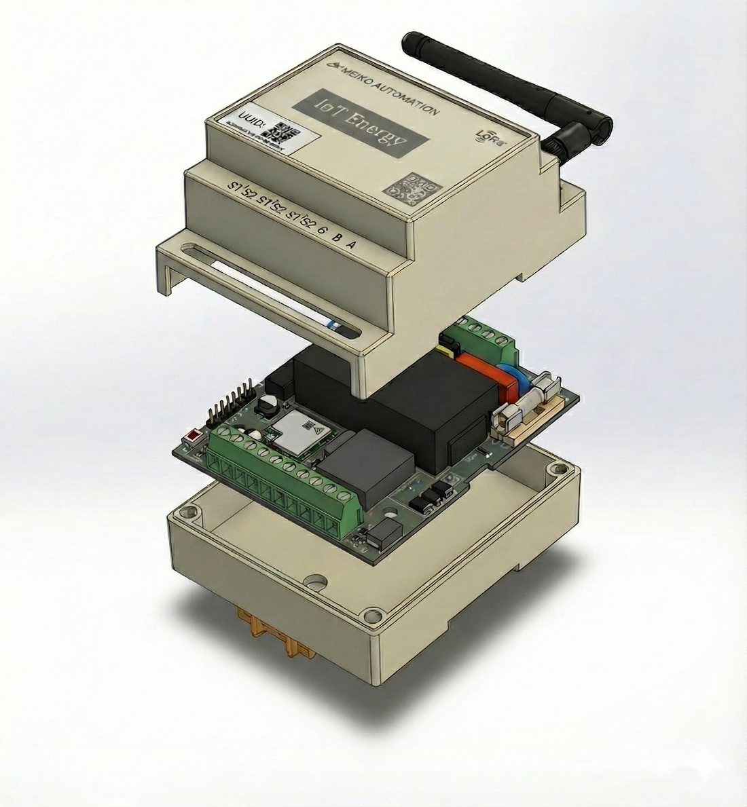
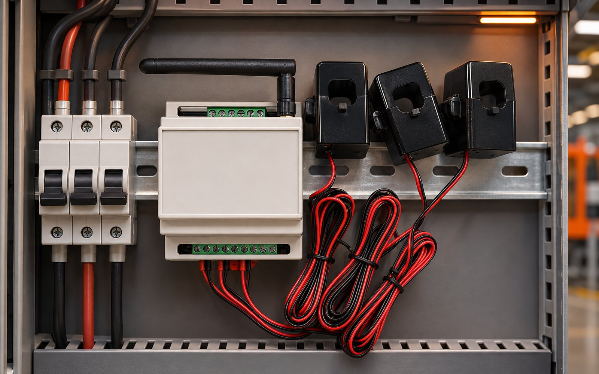
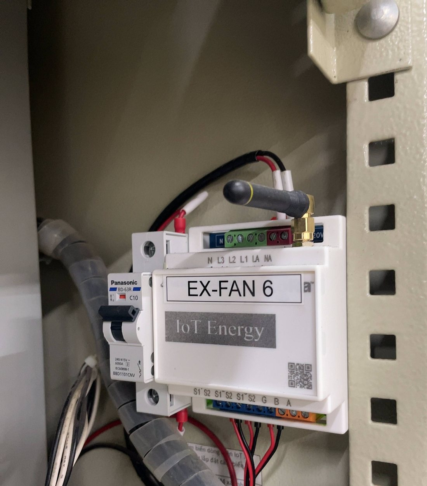

MESI-V1 Cảm biến IoT theo dõi dòng điện và trạng thái vận hành.
MESI-V1 là cảm biến IoT giám sát dòng điện thiết bị, dùng cảm biến CT và kết nối LoRa. Sản phẩm được mô tả cho các bài toán theo dõi năng lượng và trạng thái vận hành; cấu hình cụ thể cần được xác nhận.
Nội dung tạm: thông tin sản phẩm đang được hoàn thiện và cần xác nhận cùng đội kỹ thuật.

- 4× 12 bitkênh ADC
- ~1kmLoRa, môi trường mở
- 100–242VACnguồn cấp
- DINlắp thanh ray
Số liệu theo tài liệu nội dung catalogue MESI-V1; chưa có biên bản test kèm theo.
Điểm chính
- 01
Giám sát dòng điện
Theo dõi dòng điện thiết bị để hỗ trợ giám sát năng lượng và trạng thái vận hành.
- 02
Cảm biến CT
Hỗ trợ đo dòng điện qua cảm biến CT Clamp cho nhiều tải hoặc máy.
- 03
Kết nối LoRa
Dữ liệu được mô tả là truyền từ cảm biến qua LoRa đến gateway IoT.
Kiến trúc

Hình ảnh



Thông số kỹ thuật
Thông số được trích từ tài liệu kỹ thuật của Meiko. Dòng ghi "dự kiến" cần được xác nhận cùng đội kỹ thuật cho cấu hình cụ thể.
Ứng dụng
- Giám sát dòng điện máy móc và dây chuyền sản xuất
- Quản lý năng lượng cho nhà máy hoặc tòa nhà
- Theo dõi tải motor và phát hiện bất thường dòng điện
| Giao tiếp | LoRa | Thông số dự kiến — cần xác nhận |
|---|---|---|
| Tần số | 920.125–922.225 MHz | Thông số dự kiến — cần xác nhận |
| Kênh ADC | 4 channels, 12-bit | Thông số dự kiến — cần xác nhận |
| Giao diện | I2C / UART / RS485 | Thông số dự kiến — cần xác nhận |
| Nguồn cấp | 100–242 VAC | Thông số dự kiến — cần xác nhận |
| Nhiệt độ vận hành | -10–55 °C | Thông số dự kiến — cần xác nhận |
| Lắp đặt | DIN rail | Thông số dự kiến — cần xác nhận |
| Khoảng cách truyền | ~1 km (open area) | Thông số dự kiến — cần xác nhận |
| Dải dòng đo trực tiếp | 20 mA – 1 A | Thông số dự kiến — cần xác nhận |
| Dải dòng mở rộng (gián tiếp) | 0 – 1000 A | Thông số dự kiến — cần xác nhận |
| Kích thước | 90 × 90 × 30 mm | Thông số dự kiến — cần xác nhận |
| Khối lượng | 150 g | Thông số dự kiến — cần xác nhận |
| Độ ẩm | 10 – 93 % RH | Thông số dự kiến — cần xác nhận |
Chưa công bố, đang chờ xác nhận
- Model và tỉ số CT đi kèm
- Biên bản test khoảng cách LoRa trong nhà máy
- Độ chính xác đo dòng
Từ dòng điện đến dashboard.
Luồng dữ liệu mô tả trong tài liệu; cấu hình cụ thể cần được xác nhận khi triển khai.
- Cảm biến CT Clamp đo dòng điện của tải hoặc máy.
- MESI-V1 đọc tín hiệu qua 4 kênh ADC 12-bit.
- Dữ liệu truyền qua LoRa tới IoT Gateway.
- Gateway chuyển dữ liệu qua MQTT / TCP-IP lên máy chủ và dashboard.
Ảnh lắp đặt thực tế tại tủ điện nhà máy, đã cắt bỏ phần nhãn thời gian và vị trí.
Câu hỏi thường gặp
MESI-V1 đo dòng điện bằng gì?
Bằng cảm biến CT Clamp nối vào 4 kênh ADC. Tài liệu chưa nêu model và tỉ số CT cụ thể.
Truyền được bao xa?
Tài liệu nêu tới khoảng 1 km trong môi trường mở. Trong nhà máy, khoảng cách thực tế cần khảo sát.
Tích hợp được với hệ thống nào?
Tài liệu mô tả khả năng tích hợp với SCADA, MES, EMS, BMS và nền tảng Cloud IoT thông qua IoT Gateway.
Sản phẩm liên quan
Cần cấu hình cho dự án của bạn? Trao đổi với đội kỹ thuật Meiko.
Yêu cầu tư vấn / báo giá